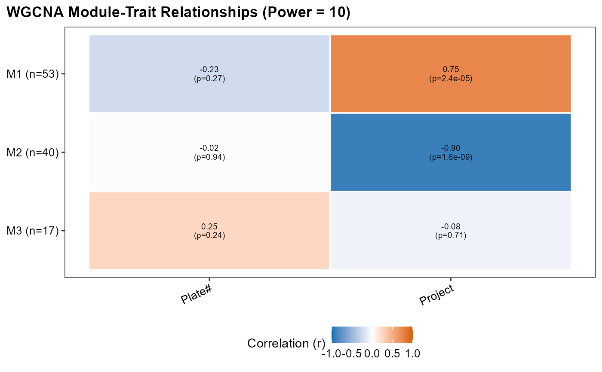

Performs signed or unsigned weighted co-expression network analysis on Olink NPX data: selects a soft-thresholding power for scale-free topology, computes the Topological Overlap Matrix (TOM), identifies co-expression modules via hierarchical clustering, extracts module eigengenes (PC1), and visualizes either module-trait correlations (`type = "module_trait"`, default), soft-thresholding diagnostics (`type = "soft_threshold"`), or top hub proteins per module (`type = "hubs"`).
Arguments
- data
A data.frame (long or wide format) or an OlinkExperiment.
- traits
Optional character vector of sample metadata column names to correlate with module eigengenes. If `NULL`, auto-detects numeric and low-cardinality categorical metadata columns.
- type
Plot type: `"module_trait"` (default), `"soft_threshold"`, or `"hubs"`.
- power
Soft-thresholding power. If `NULL` (default), automatically picks the lowest power reaching scale-free topology `R^2 >= 0.80` (or the power maximizing `R^2`, typically 6–12).
- network_type
`"signed"` (default) or `"unsigned"`.
- min_module_size
Minimum number of proteins per module (default `8`).
- top_n
Number of most variable proteins to include (default `120`; set `NULL` to use all).
- top_hubs
Number of top hub proteins per module when `type = "hubs"` (default `5`).
- assay_col, value_col, sample_col
Optional column names. If `NULL`, auto-detected.
- title
Plot title.
Value
A ggplot object. `attr(p, "wgcna")` contains `modules`, `eigengenes`, `trait_cor`, `trait_pval`, `power`, and `soft_threshold`.
Examples
# \donttest{
plot_wgcna(probc[probc$Timepoint == 1, ], traits = c("Project", "Plate#"))
#> Dropped assay-level column(s) from wide pivot: OlinkID, UniProt, Panel, Panel_Version, PlateID
#> Averaging 96 replicate(s) across assay-sample combinations

# }